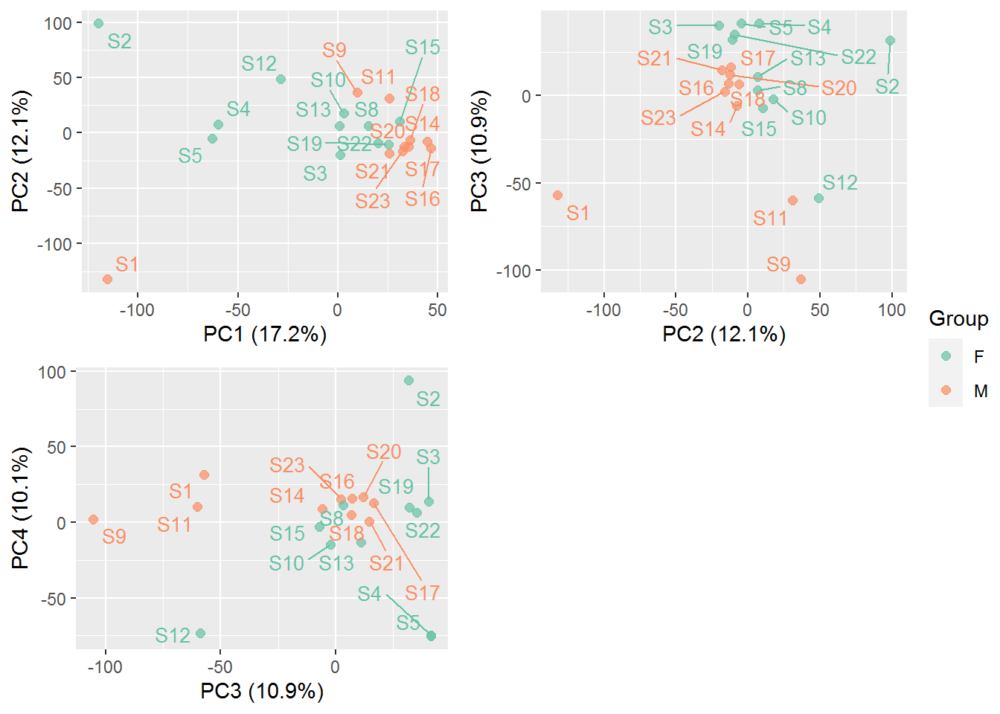
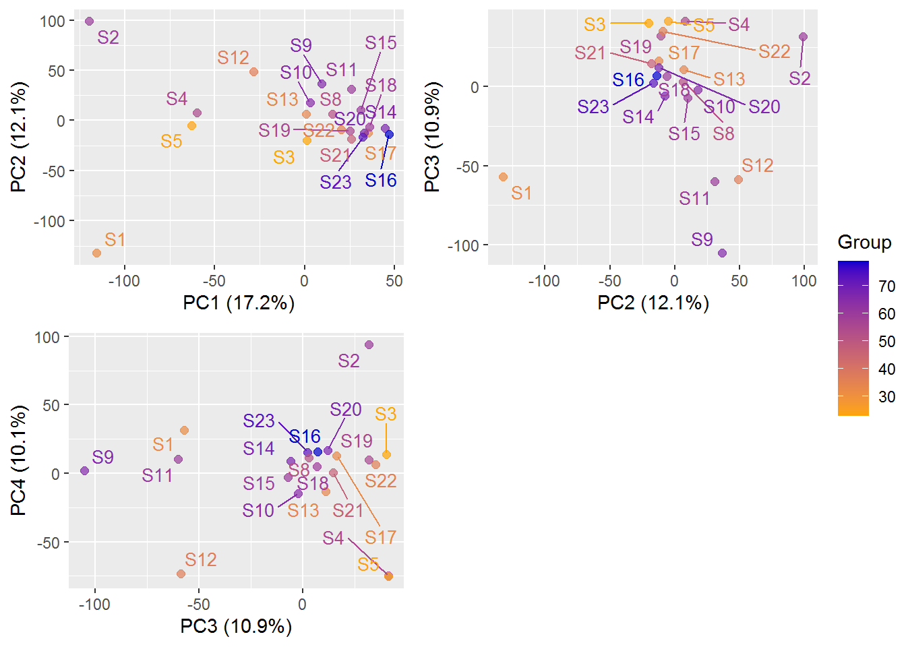
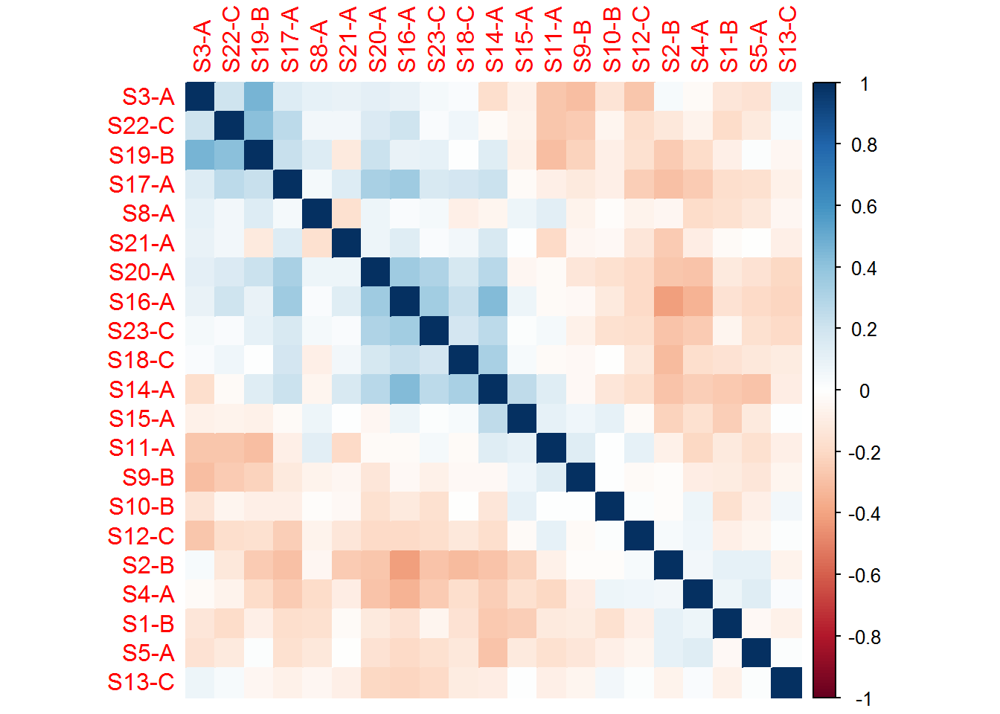
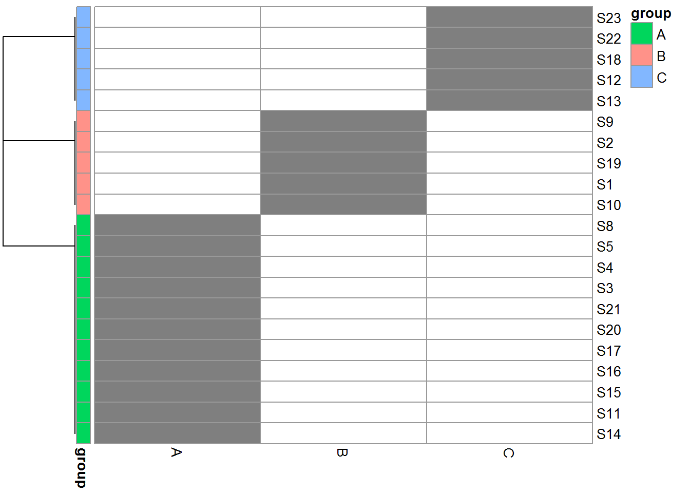
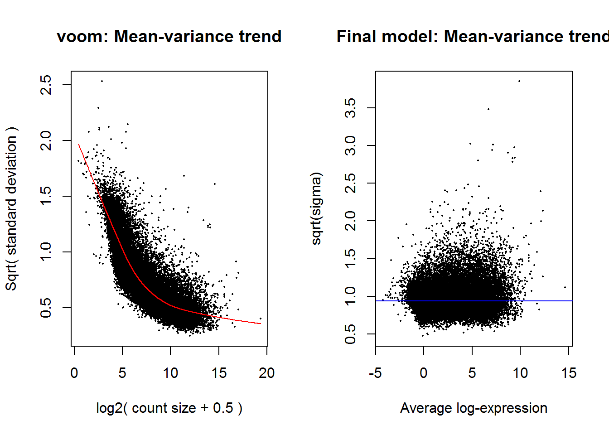

Last updated: 2022-02-10
Checks: 6 1
Knit directory: RNAseq/
This reproducible R Markdown analysis was created with workflowr (version 1.7.0). The Checks tab describes the reproducibility checks that were applied when the results were created. The Past versions tab lists the development history.
The R Markdown is untracked by Git. To know which version of the R Markdown file created these results, you’ll want to first commit it to the Git repo. If you’re still working on the analysis, you can ignore this warning. When you’re finished, you can run wflow_publish to commit the R Markdown file and build the HTML.
Great job! The global environment was empty. Objects defined in the global environment can affect the analysis in your R Markdown file in unknown ways. For reproduciblity it’s best to always run the code in an empty environment.
The command set.seed(20220203) was run prior to running the code in the R Markdown file. Setting a seed ensures that any results that rely on randomness, e.g. subsampling or permutations, are reproducible.
Great job! Recording the operating system, R version, and package versions is critical for reproducibility.
Nice! There were no cached chunks for this analysis, so you can be confident that you successfully produced the results during this run.
Great job! Using relative paths to the files within your workflowr project makes it easier to run your code on other machines.
Great! You are using Git for version control. Tracking code development and connecting the code version to the results is critical for reproducibility.
The results in this page were generated with repository version c12bc7e. See the Past versions tab to see a history of the changes made to the R Markdown and HTML files.
Note that you need to be careful to ensure that all relevant files for the analysis have been committed to Git prior to generating the results (you can use wflow_publish or wflow_git_commit). workflowr only checks the R Markdown file, but you know if there are other scripts or data files that it depends on. Below is the status of the Git repository when the results were generated:
Ignored files:
Ignored: .Rhistory
Ignored: .Rproj.user/
Ignored: analysis/figure/
Untracked files:
Untracked: JDRF_RNASeq_DE.Rmd
Untracked: JDRF_RNASeq_DE_S7_removed.Rmd
Untracked: JDRF_counts.csv
Untracked: RNA-seq(S1-S23)Deseq(coded)240122.xlsx
Untracked: RNAseq(S1-S23)normalizedDeseq.xlsx
Untracked: RNAseq(S1-S23)rawreads.xlsx
Untracked: _site.yml
Untracked: analysis/JDRF_RNASeq_DE.Rmd
Untracked: analysis/JDRF_RNASeq_DE_RUVseq.Rmd
Untracked: analysis/JDRF_RNASeq_DE_S7_S6_RUVseq.Rmd
Untracked: analysis/JDRF_RNASeq_DE_S7_S6_removed.Rmd
Untracked: data/RNAseq(S1-S23)rawreads.xlsx
Untracked: data/dgeList.rds
Untracked: data/dgeList_S6_S7.rds
Untracked: data/sampleInfo.xlsx
Untracked: data/samples.rds
Untracked: data/topTables_efit.rds
Untracked: data/topTables_tfit.rds
Untracked: figure/
Untracked: sampleInfo.xlsx
Unstaged changes:
Modified: analysis/_site.yml
Deleted: analysis/about.Rmd
Modified: analysis/index.Rmd
Deleted: analysis/license.Rmd
Note that any generated files, e.g. HTML, png, CSS, etc., are not included in this status report because it is ok for generated content to have uncommitted changes.
There are no past versions. Publish this analysis with wflow_publish() to start tracking its development.
First we load all the required R packages
library(readxl)
library(here)
library(pander)
library(tidyverse)
library(magrittr)
library(AnnotationHub)
library(ensembldb)
library(ggpubr)
library(reshape)
library(edgeR)
library(ggrepel)
library(corrplot)
library(ggplot2)
library(scales)
library(pheatmap)
library(RColorBrewer)
library(org.Hs.eg.db)ah <- AnnotationHub() %>%
subset(species == "Homo sapiens") %>%
subset(dataprovider == "Ensembl") %>%
subset(genome == "GRCh38") %>%
subset(rdataclass == "EnsDb")
ensDb <- ah[["AH53211"]]grGenes <- genes(ensDb)samples <- read_excel("sampleInfo.xlsx") %>%
mutate(
group = factor(group, levels = c("A", "B", "C")))
# groupCols <- samples$Group %>%
# levels() %>%
# length() %>%
# brewer.pal("Dark2") %>%
# setNames(levels(samples$group))Load the transcript count table and aggregate to gene level count
counts <- read_excel("RNAseq(S1-S23)rawreads.xlsx") %>%
dplyr::select(-S7, -S6) %>%
column_to_rownames("Gene")%>%
as.data.frame() %>%
round(digits = 0) %>%
rownames_to_column("gene_id") %>%
gather(key = "sample", value = "Count", -gene_id) %>%
dplyr::filter(Count > 0) %>%
left_join(grGenes[,c("gene_id", "gene_name")] %>%
mcols() %>%
as.data.frame()) %>%
group_by(gene_id, sample) %>%
summarise(Count = sum(Count)) %>%
spread(sample, Count, fill = 0) %>%
as.data.frame() %>%
column_to_rownames("gene_id") minCPM <- 1
minSamples <- 5
dgeList <- counts %>%
.[rowSums(cpm(.) >= minCPM) >= minSamples,] %>%
DGEList(
samples = tibble(sample = colnames(.)) %>%
left_join(samples),
genes = tibble(gene_id = rownames(.)) %>% left_join(grGenes %>% as.data.frame() %>%
dplyr::select(
chromosome = seqnames, start, end,
gene_id, gene_name, gene_biotype, description, entrezid))) %>%
# .[grepl("protein_coding", .$genes$gene_biotype),] %>%
# .[!grepl("rRNA", .$genes$gene_biotype),] %>%
# .[!grepl("lncRNA", .$genes$gene_biotype),] %>%
calcNormFactors()Count data as provided by Wilson, was loaded and formed into a DGEList object. During this process, genes were removed if:
They were not considered as detectable (CPM < 1 in at least 5 samples). This translates to > 6 reads assigned a gene in all samples from one or more of the genotype groups
These filtering steps returned counts for 24,342 genes from 53284`, with total library sizes between 5,934,559 and 35,836,448 reads assigned to genes.
keepTheseGenes <- (rowSums(cpm(counts) > minCPM) >= minSamples)
## Compare the density distributions before and after filtering
BeforeFilt <- counts %>%
cpm(log = TRUE) %>%
as.data.frame() %>%
pivot_longer(
cols = everything(),
names_to = "sample",
values_to = "logCPM") %>%
split(f = .$sample) %>%
lapply(function(x){
d <- density(x$logCPM)
tibble(sample = unique(x$sample),
x = d$x,y = d$y)}) %>%
bind_rows() %>%
left_join(samples) %>%
ggplot(aes(x, y, colour = group, group = sample)) +
geom_line() +
ggtitle("A. Before filtering", subtitle = paste0(nrow(counts), " genes")) +
scale_colour_manual(values = brewer.pal(8,"Set1")) +
labs(x = "logCPM", y = "Density", colour = "Group")
AfterFilt<-dgeList %>%
cpm(log = TRUE) %>%
as.data.frame() %>%
pivot_longer(
cols = everything(),
names_to = "sample",
values_to = "logCPM") %>%
split(f = .$sample) %>%
lapply(function(x){
d <- density(x$logCPM)
tibble(sample = unique(x$sample),
x = d$x,y = d$y)}) %>%
bind_rows() %>%
left_join(samples) %>%
ggplot(aes(x, y, colour = group, group = sample)) +
geom_line() +
ggtitle("B. After filtering", subtitle = paste0(table(keepTheseGenes)[[2]], " genes"))+
scale_colour_manual(values = brewer.pal(8,"Set1")) +
labs(x = "logCPM", y = "Density", colour = "Group")
CPM_filter_plot <-
ggarrange(BeforeFilt, AfterFilt,
common.legend = TRUE, legend = "right")
CPM_filter_plotExpression density plots for all samples after filtering, showing logCPM values.
Library Sizes after removal of undetectable genes. Median library size is shown as the dashed line.
This dataset retained 24,342 genes for DGE analysis.
pca <- dgeList %>%
cpm(log = TRUE) %>%
t() %>%
prcomp()
pcaVars <- percent_format(0.1)(summary(pca)$importance["Proportion of Variance",])pca$x %>%
as.data.frame() %>%
rownames_to_column("sample") %>%
as_tibble() %>%
dplyr::select(sample, PC1, PC2) %>%
left_join(dgeList$samples,"sample") %>%
ggplot(aes(x=PC1, y=PC2, colour = group)) +
geom_point(alpha = 0.7, size = 2) +
geom_text_repel(aes(label = sample), size=4.4, show.legend = FALSE, max.overlaps =30) +
# stat_ellipse(geom = "polygon", alpha = 0.1, show.legend = FALSE, aes(fill=group)) +
#scale_shape_manual(values=c(15,11,19,17))+ #change shape
scale_colour_manual(
values = brewer.pal(8,"Set1")) +
labs(
x = paste0("PC1 (", pcaVars[["PC1"]], ")"),
y = paste0("PC2 (", pcaVars[["PC2"]], ")"),
colour = "Group")PCA 1 & 2 of gene-level counts.
As clustering by group is not evident in the initial PC1 vs PC2, I then plot PC2 vs PC3 and PC3 vs PC4. However, there is still no observed clustering.
pca$x %>%
as.data.frame() %>%
rownames_to_column("sample") %>%
as_tibble() %>%
dplyr::select(sample, PC1, PC2) %>%
left_join(dgeList$samples,"sample") %>%
ggplot(aes(x=PC1, y=PC2, colour = gender)) +
geom_point(alpha = 0.7, size = 2) +
geom_text_repel(aes(label = sample), size=4.4, show.legend = FALSE, max.overlaps =30) +
# stat_ellipse(geom = "polygon", alpha = 0.1, show.legend = FALSE, aes(fill=group)) +
#scale_shape_manual(values=c(15,11,19,17))+ #change shape
scale_colour_manual(
values = brewer.pal(8,"Set2")) +
labs(
x = paste0("PC1 (", pcaVars[["PC1"]], ")"),
y = paste0("PC2 (", pcaVars[["PC2"]], ")"),
colour = "Group")Annotated Gender on PCA 1 & 2.
pca$x %>%
as.data.frame() %>%
rownames_to_column("sample") %>%
as_tibble() %>%
dplyr::select(sample, PC1, PC2) %>%
left_join(dgeList$samples,"sample") %>%
ggplot(aes(x=PC1, y=PC2, colour = age)) +
geom_point(alpha = 0.7, size = 2) +
geom_text_repel(aes(label = sample), size=4.4, show.legend = FALSE, max.overlaps =30) +
# stat_ellipse(geom = "polygon", alpha = 0.1, show.legend = FALSE, aes(fill=group)) +
#scale_shape_manual(values=c(15,11,19,17))+ #change shape
scale_color_gradient(low = "orange", high = "mediumblue", space = "Lab")Annotated age on PCA 1 & 2.
labs(
x = paste0("PC1 (", pcaVars[["PC1"]], ")"),
y = paste0("PC2 (", pcaVars[["PC2"]], ")"),
colour = "Group")$x
[1] "PC1 (17.2%)"
$y
[1] "PC2 (12.1%)"
$colour
[1] "Group"
attr(,"class")
[1] "labels"pca12 <-pca$x %>%
as.data.frame() %>%
rownames_to_column("sample") %>%
as_tibble() %>%
dplyr::select(sample, PC1, PC2) %>%
left_join(dgeList$samples,"sample") %>%
ggplot(aes(x=PC1, y=PC2, colour = group)) +
geom_point(alpha = 0.7, size = 2) +
geom_text_repel(aes(label = sample), size=3.5, show.legend = FALSE, max.overlaps =30) +
scale_colour_manual(
values = brewer.pal(8,"Set1")) +
labs(
x = paste0("PC1 (", pcaVars[["PC1"]], ")"),
y = paste0("PC2 (", pcaVars[["PC2"]], ")"),
colour = "Group")
pca23 <-pca$x %>%
as.data.frame() %>%
rownames_to_column("sample") %>%
as_tibble() %>%
dplyr::select(sample, PC2, PC3) %>%
left_join(dgeList$samples,"sample") %>%
ggplot(aes(x=PC2, y=PC3, colour = group)) +
geom_point(alpha = 0.7, size = 2) +
geom_text_repel(aes(label = sample), size=3.5, show.legend = FALSE, max.overlaps =30) +
scale_colour_manual(
values = brewer.pal(8,"Set1")) +
labs(
x = paste0("PC2 (", pcaVars[["PC2"]], ")"),
y = paste0("PC3 (", pcaVars[["PC3"]], ")"),
colour = "Group")
pca34 <-pca$x %>%
as.data.frame() %>%
rownames_to_column("sample") %>%
as_tibble() %>%
dplyr::select(sample, PC3, PC4) %>%
left_join(dgeList$samples,"sample") %>%
ggplot(aes(x=PC3, y=PC4, colour = group)) +
geom_point(alpha = 0.7, size = 2) +
geom_text_repel(aes(label = sample), size=3.5, show.legend = FALSE, max.overlaps =30) +
scale_colour_manual(
values = brewer.pal(8,"Set1")) +
labs(
x = paste0("PC3 (", pcaVars[["PC3"]], ")"),
y = paste0("PC4 (", pcaVars[["PC4"]], ")"),
colour = "Group")
pca1_4_plot <- ggarrange(pca12, pca23, pca34,
common.legend = TRUE, legend = "right", max.overlaps =100)
pca1_4_plotPCA 1-4 of gene.
A Principal Component Analysis (PCA) was performed using logCPM values from each sample. Samples do not appears to cluster together based on group.


pca$x %>% set_rownames(dgeList$samples$label) %>%
t() %>%
as.data.frame() %>%
cor() %>%
# .[1:20,1:20] %>%
corrplot(method = "color", order="AOE") Correlation plot shows two distinct groups, require additional information to determine how groups were clustered (eg: age, gender, severity of disease)
design <- model.matrix(~0+group+gender+age, data=dgeList$samples)%>%
set_colnames(str_remove(colnames(.), "group"))contr.matrix <- makeContrasts(
AvsB = B-A,
BvsC = C-B,
AvsC = C-A,
levels = colnames(design))
contr.matrix Contrasts
Levels AvsB BvsC AvsC
A -1 0 -1
B 1 -1 0
C 0 1 1
genderM 0 0 0
age 0 0 0pheatmap(
design[,c(1:3)],
cluster_cols = FALSE,
cluster_rows = TRUE,
color = c("white", "grey50"),
annotation_row = dgeList$samples["group"],
annotation_colors = list(condition = brewer.pal(8,"Set1")),
legend = FALSE
)
The approach taken for DGE analysis was to use voom-precision weights in order to allow for modelling using Normally distributed data. Since there were no covariates to my model matrix and initial PCA looks like there is sample heterogeneity I decided to run voomWithQualityWeights to incorporate sample-level weights. Sample-level weights were estimated as part of this process, with all samples normally being considered as belonging to the same treatment group, to allow more conservative estimates.
#Sample weights after voom transformation
v <- voomWithQualityWeights(dgeList, design=design, plot=FALSE)Means (x-axis) and variances (y-axis) of each gene are plotted to show the dependence between the two before voom is applied to the data (left panel) and how the trend is removed after voom precision weights are applied to the data (right panel)
par(mfrow=c(1,2))
v2 <- voom(dgeList, design, plot=TRUE)
v2fit <-lmFit(v2, design)
e2fit <-eBayes(v2fit)
plotSA(e2fit, main="Final model: Mean-variance trend")
Sample weights after voom transformation
targets <-v$targets
targets %>%
ggplot(aes(label, sample.weights)) +
geom_bar(stat = "identity", aes(fill=group)) +
geom_hline(yintercept = 1, linetype = 2, colour = "grey50") +
scale_y_continuous(expand = expand_scale(c(0, 0.05))) +
scale_fill_manual(values = brewer.pal(8,"Set1")) +
facet_grid(~ group, scales = "free_x", space="free") +
labs(x = "Sample", y = "Sample Weight", fill = "Group") +
theme(axis.text.x = element_text(angle = 90),
strip.text = element_text(face="bold"))Sample weights after voom transformation. The idealised equal weighting of \(w = 1\) is shown as the dashed line.
tau <- log2(1.1) #less stringent hereFor the comparison between groups, a null hypothesis was tested using a range of values, instead of the point value zero, i.e.
\[ H_0: -\tau < \Delta \mu < \tau \\ Vs. \\ H_A: | \Delta \mu | > \tau \]
The default value used in the function treat() is \(\tau = \log_2 1.1\) and for this analysis, \(\tau = \log_2 1.1\) was chosen as a suitable value.
alpha <- 0.05
tfit <- lmFit(v,design) %>%
contrasts.fit(contr.matrix) %>%
treat(lfc = tau)
efit <- lmFit(v,design) %>%
contrasts.fit(contr.matrix) %>%
eBayes()This gave the number of genes considered as DE between the comparison groups with Bonferroni adjusted P-value < 0.05.
summary(decideTests(tfit)) AvsB BvsC AvsC
Down 0 0 1
NotSig 24342 24342 24341
Up 0 0 0For a less strict definition on significance, requirement of log-fold-changes is removed and uses empirical Bayes moderated t-statistics but there were still no DE
summary(decideTests(efit)) AvsB BvsC AvsC
Down 0 0 1
NotSig 24342 24342 24341
Up 0 0 0topTables_efit <- colnames(contr.matrix) %>%
sapply(function(x){
topTreat(efit, coef = x, n = Inf) %>%
as_tibble() %>%
rownames_to_column("No.") %>%
arrange(P.Value) %>%
mutate(DE= adj.P.Val < alpha,
Status = case_when(
DE ==TRUE & logFC < 0 ~ "Down",
DE == TRUE & logFC > 0 ~ "Up"),
Status = ifelse(is.na(Status), "NotSig", Status))}, simplify = FALSE)head(topTables_efit$AvsB, n=10) %>% dplyr::select (gene_name, gene_biotype, logFC, AveExpr, P.Value, adj.P.Val, Status) %>% pander(caption="AvsB", n=10)| gene_name | gene_biotype | logFC | AveExpr | P.Value | adj.P.Val |
|---|---|---|---|---|---|
| DPY19L1P1 | unprocessed_pseudogene | 2.359 | 1.385 | 1.262e-05 | 0.3073 |
| ESPN | protein_coding | 1.249 | 2.05 | 3.695e-05 | 0.3086 |
| SCARNA10 | snoRNA | -0.6823 | 8.29 | 4.811e-05 | 0.3086 |
| ORMDL1 | protein_coding | -0.4917 | 6.505 | 6.126e-05 | 0.3086 |
| TMEM243 | protein_coding | -0.4798 | 6.826 | 8.629e-05 | 0.3086 |
| SOCS4 | protein_coding | -0.4576 | 6.016 | 9.419e-05 | 0.3086 |
| NEPRO | protein_coding | -0.5427 | 6.093 | 9.688e-05 | 0.3086 |
| BCCIP | protein_coding | -0.4975 | 5.713 | 0.0001256 | 0.3086 |
| BRD9P2 | unprocessed_pseudogene | 1.234 | 1.245 | 0.0001504 | 0.3086 |
| MICAL1 | protein_coding | 0.3816 | 7.164 | 0.0001514 | 0.3086 |
| Status |
|---|
| NotSig |
| NotSig |
| NotSig |
| NotSig |
| NotSig |
| NotSig |
| NotSig |
| NotSig |
| NotSig |
| NotSig |
head(topTables_efit$BvsC, n=10) %>% dplyr::select (gene_name, gene_biotype, logFC, AveExpr, P.Value, adj.P.Val, Status) %>% pander(caption="BvsC")| gene_name | gene_biotype | logFC | AveExpr |
|---|---|---|---|
| AC068831.15 | antisense | -1.1 | 2.17 |
| NAPRT | protein_coding | -2.306 | 2.374 |
| PID1 | protein_coding | -1.298 | 5.257 |
| TRAT1 | protein_coding | 0.5688 | 6.749 |
| HLA-J | transcribed_unprocessed_pseudogene | -2.689 | 2.736 |
| PPIAP2 | processed_pseudogene | -3.436 | -1.052 |
| WISP3 | protein_coding | 1.292 | 1.411 |
| WDSUB1 | protein_coding | -1.478 | 2.348 |
| PPIP5K1 | protein_coding | -0.7288 | 3.68 |
| CTD-2532D12.4 | lincRNA | -3.708 | -0.9337 |
| P.Value | adj.P.Val | Status |
|---|---|---|
| 6.883e-05 | 0.758 | NotSig |
| 0.0001033 | 0.758 | NotSig |
| 0.0001114 | 0.758 | NotSig |
| 0.0001383 | 0.758 | NotSig |
| 0.000161 | 0.758 | NotSig |
| 0.0001868 | 0.758 | NotSig |
| 0.000241 | 0.828 | NotSig |
| 0.000278 | 0.828 | NotSig |
| 0.0003231 | 0.828 | NotSig |
| 0.0003402 | 0.828 | NotSig |
head(topTables_efit$AvsC, n=10) %>% dplyr::select (gene_name, gene_biotype, logFC, AveExpr, P.Value, adj.P.Val, Status) %>% pander(caption="AvsC")| gene_name | gene_biotype | logFC | AveExpr | P.Value | adj.P.Val |
|---|---|---|---|---|---|
| WDSUB1 | protein_coding | -1.902 | 2.348 | 8.901e-07 | 0.02167 |
| UST | protein_coding | 1.231 | 4.137 | 9.559e-05 | 0.9999 |
| PPIAP2 | processed_pseudogene | -3.054 | -1.052 | 0.0002519 | 0.9999 |
| TEX101 | protein_coding | -2.363 | 0.6221 | 0.0003446 | 0.9999 |
| SCARNA10 | snoRNA | -0.5156 | 8.29 | 0.0003811 | 0.9999 |
| SNORA67 | snoRNA | -1.385 | 2.172 | 0.0004082 | 0.9999 |
| KRT1 | protein_coding | -4.182 | -3.114 | 0.000416 | 0.9999 |
| ZDHHC11B | protein_coding | 1.496 | 2.422 | 0.0004254 | 0.9999 |
| ADTRP | protein_coding | -1.164 | 4.811 | 0.0005256 | 0.9999 |
| LPAR5 | protein_coding | 0.793 | 3.061 | 0.0006141 | 0.9999 |
| Status |
|---|
| Down |
| NotSig |
| NotSig |
| NotSig |
| NotSig |
| NotSig |
| NotSig |
| NotSig |
| NotSig |
| NotSig |
topTables_tfit <- colnames(contr.matrix) %>%
sapply(function(x){
topTreat(tfit, coef = x, n = Inf) %>%
as_tibble() %>%
rownames_to_column("No.") %>%
arrange(P.Value) %>%
mutate(DE= adj.P.Val < alpha,
Status = case_when(
DE ==TRUE & logFC < 0 ~ "Down",
DE == TRUE & logFC > 0 ~ "Up"),
Status = ifelse(is.na(Status), "NotSig", Status))}, simplify = FALSE)head(topTables_tfit$AvsB, n=10) %>% dplyr::select (gene_name, gene_biotype, logFC, AveExpr, P.Value, adj.P.Val, Status) %>% pander(caption="AvsB")| gene_name | gene_biotype | logFC | AveExpr | P.Value |
|---|---|---|---|---|
| DPY19L1P1 | unprocessed_pseudogene | 2.359 | 1.385 | 1.667e-05 |
| ESPN | protein_coding | 1.249 | 2.05 | 7.782e-05 |
| BRD9P2 | unprocessed_pseudogene | 1.234 | 1.245 | 0.0002824 |
| SCARNA10 | snoRNA | -0.6823 | 8.29 | 0.0002871 |
| ATP5J | protein_coding | -1.213 | 2.061 | 0.0003619 |
| ZNF22 | protein_coding | -0.9353 | 2.369 | 0.0004302 |
| OACYLP | transcribed_unitary_pseudogene | 2.045 | -0.1991 | 0.0004703 |
| XXYLT1 | protein_coding | 1.024 | 3.591 | 0.0004857 |
| EGR1 | protein_coding | 1.93 | 3.849 | 0.0006399 |
| RP11-180C16.1 | antisense | 1.307 | 2.48 | 0.0006795 |
| adj.P.Val | Status |
|---|---|
| 0.4058 | NotSig |
| 0.9381 | NotSig |
| 0.9381 | NotSig |
| 0.9381 | NotSig |
| 0.9381 | NotSig |
| 0.9381 | NotSig |
| 0.9381 | NotSig |
| 0.9381 | NotSig |
| 0.9381 | NotSig |
| 0.9381 | NotSig |
head(topTables_tfit$BvsC, n=10) %>% dplyr::select (gene_name, gene_biotype, logFC, AveExpr, P.Value, adj.P.Val, Status) %>% pander(caption="BvsC")| gene_name | gene_biotype | logFC | AveExpr |
|---|---|---|---|
| NAPRT | protein_coding | -2.306 | 2.374 |
| AC068831.15 | antisense | -1.1 | 2.17 |
| HLA-J | transcribed_unprocessed_pseudogene | -2.689 | 2.736 |
| PID1 | protein_coding | -1.298 | 5.257 |
| PPIAP2 | processed_pseudogene | -3.436 | -1.052 |
| CTD-2532D12.4 | lincRNA | -3.708 | -0.9337 |
| WISP3 | protein_coding | 1.292 | 1.411 |
| WDSUB1 | protein_coding | -1.478 | 2.348 |
| RP11-493L12.5 | lincRNA | -2.894 | 0.112 |
| C4orf50 | protein_coding | -1.771 | 2.416 |
| P.Value | adj.P.Val | Status |
|---|---|---|
| 0.0001286 | 0.9983 | NotSig |
| 0.0001604 | 0.9983 | NotSig |
| 0.0001876 | 0.9983 | NotSig |
| 0.000204 | 0.9983 | NotSig |
| 0.0002051 | 0.9983 | NotSig |
| 0.0003654 | 0.9998 | NotSig |
| 0.0004139 | 0.9998 | NotSig |
| 0.0004223 | 0.9998 | NotSig |
| 0.0004966 | 0.9998 | NotSig |
| 0.0005261 | 0.9998 | NotSig |
head(topTables_tfit$AvsC, n=10) %>% dplyr::select (gene_name, gene_biotype, logFC, AveExpr, P.Value, adj.P.Val, Status) %>% pander(caption="AvsC")| gene_name | gene_biotype | logFC | AveExpr | P.Value | adj.P.Val |
|---|---|---|---|---|---|
| WDSUB1 | protein_coding | -1.902 | 2.348 | 1.497e-06 | 0.03643 |
| UST | protein_coding | 1.231 | 4.137 | 0.0001878 | 1 |
| PPIAP2 | processed_pseudogene | -3.054 | -1.052 | 0.0002813 | 1 |
| TEX101 | protein_coding | -2.363 | 0.6221 | 0.0004085 | 1 |
| KRT1 | protein_coding | -4.182 | -3.114 | 0.0004392 | 1 |
| ZDHHC11B | protein_coding | 1.496 | 2.422 | 0.000621 | 1 |
| SNORA67 | snoRNA | -1.385 | 2.172 | 0.0006317 | 1 |
| ADTRP | protein_coding | -1.164 | 4.811 | 0.0009212 | 1 |
| NAPRT | protein_coding | -1.691 | 2.374 | 0.001005 | 1 |
| UPK3BL | protein_coding | 0.915 | 3.296 | 0.001386 | 1 |
| Status |
|---|
| Down |
| NotSig |
| NotSig |
| NotSig |
| NotSig |
| NotSig |
| NotSig |
| NotSig |
| NotSig |
| NotSig |
Next we could try RUVSeq package to adjust for unwanted technical effects that may be present in these data with the use of empirical controls (eg: spike-in / housekeeping genes) that do not change across conditions. This need to be done cautiously with a very low k value to minimize the chance of removing biologically meaningful variation.
dgeList %>%
saveRDS(here("data", "dgeList_S6_S7.rds"))
topTables_tfit %>%
saveRDS(here("data", "topTables_tfit_S6_S7.rds"))
topTables_efit %>%
saveRDS(here("data", "topTables_efit_S6_S7.rds"))sessionInfo()R version 4.1.0 (2021-05-18)
Platform: x86_64-w64-mingw32/x64 (64-bit)
Running under: Windows Server x64 (build 14393)
Matrix products: default
locale:
[1] LC_COLLATE=English_Australia.1252 LC_CTYPE=English_Australia.1252
[3] LC_MONETARY=English_Australia.1252 LC_NUMERIC=C
[5] LC_TIME=English_Australia.1252
attached base packages:
[1] stats4 parallel stats graphics grDevices utils datasets
[8] methods base
other attached packages:
[1] org.Hs.eg.db_3.13.0 RColorBrewer_1.1-2 pheatmap_1.0.12
[4] scales_1.1.1 corrplot_0.92 ggrepel_0.9.1
[7] edgeR_3.34.1 limma_3.48.0 reshape_0.8.8
[10] ggpubr_0.4.0.999 ensembldb_2.16.4 AnnotationFilter_1.16.0
[13] GenomicFeatures_1.44.2 AnnotationDbi_1.54.1 Biobase_2.52.0
[16] GenomicRanges_1.44.0 GenomeInfoDb_1.28.4 IRanges_2.26.0
[19] S4Vectors_0.30.0 AnnotationHub_3.0.1 BiocFileCache_2.0.0
[22] dbplyr_2.1.1 BiocGenerics_0.38.0 magrittr_2.0.1
[25] forcats_0.5.1 stringr_1.4.0 dplyr_1.0.6
[28] purrr_0.3.4 readr_2.0.2 tidyr_1.1.4
[31] tibble_3.1.2 ggplot2_3.3.5 tidyverse_1.3.1
[34] pander_0.6.4 here_1.0.1 readxl_1.3.1
loaded via a namespace (and not attached):
[1] backports_1.4.1 workflowr_1.7.0
[3] plyr_1.8.6 lazyeval_0.2.2
[5] BiocParallel_1.26.2 digest_0.6.29
[7] htmltools_0.5.2 fansi_0.5.0
[9] memoise_2.0.1 tzdb_0.2.0
[11] Biostrings_2.60.2 modelr_0.1.8
[13] matrixStats_0.61.0 prettyunits_1.1.1
[15] colorspace_2.0-2 blob_1.2.2
[17] rvest_1.0.2 rappdirs_0.3.3
[19] haven_2.4.3 xfun_0.29
[21] crayon_1.4.2 RCurl_1.98-1.5
[23] jsonlite_1.7.3 glue_1.4.2
[25] gtable_0.3.0 zlibbioc_1.38.0
[27] XVector_0.32.0 DelayedArray_0.18.0
[29] car_3.0-12 abind_1.4-5
[31] DBI_1.1.2 rstatix_0.7.0
[33] Rcpp_1.0.8 xtable_1.8-4
[35] progress_1.2.2 bit_4.0.4
[37] httr_1.4.2 ellipsis_0.3.2
[39] farver_2.1.0 pkgconfig_2.0.3
[41] XML_3.99-0.8 sass_0.4.0
[43] locfit_1.5-9.4 utf8_1.2.1
[45] labeling_0.4.2 tidyselect_1.1.1
[47] rlang_0.4.11 later_1.3.0
[49] munsell_0.5.0 BiocVersion_3.13.1
[51] cellranger_1.1.0 tools_4.1.0
[53] cachem_1.0.6 cli_3.0.0
[55] generics_0.1.2 RSQLite_2.2.9
[57] broom_0.7.12 evaluate_0.14
[59] fastmap_1.1.0 yaml_2.2.2
[61] knitr_1.37 bit64_4.0.5
[63] fs_1.5.2 KEGGREST_1.32.0
[65] mime_0.12 xml2_1.3.3
[67] biomaRt_2.48.3 compiler_4.1.0
[69] rstudioapi_0.13 filelock_1.0.2
[71] curl_4.3.2 png_0.1-7
[73] interactiveDisplayBase_1.30.0 ggsignif_0.6.3
[75] reprex_2.0.1 bslib_0.3.1
[77] stringi_1.7.6 highr_0.9
[79] lattice_0.20-44 ProtGenerics_1.24.0
[81] Matrix_1.3-3 vctrs_0.3.8
[83] pillar_1.6.5 lifecycle_1.0.1
[85] BiocManager_1.30.16 jquerylib_0.1.4
[87] cowplot_1.1.1 bitops_1.0-7
[89] httpuv_1.6.5 rtracklayer_1.52.1
[91] R6_2.5.1 BiocIO_1.2.0
[93] promises_1.2.0.1 gridExtra_2.3
[95] assertthat_0.2.1 SummarizedExperiment_1.22.0
[97] rprojroot_2.0.2 rjson_0.2.21
[99] withr_2.4.3 GenomicAlignments_1.28.0
[101] Rsamtools_2.8.0 GenomeInfoDbData_1.2.6
[103] hms_1.1.1 grid_4.1.0
[105] rmarkdown_2.11 MatrixGenerics_1.4.3
[107] carData_3.0-5 git2r_0.29.0
[109] shiny_1.7.1 lubridate_1.8.0
[111] restfulr_0.0.13
sessionInfo()R version 4.1.0 (2021-05-18)
Platform: x86_64-w64-mingw32/x64 (64-bit)
Running under: Windows Server x64 (build 14393)
Matrix products: default
locale:
[1] LC_COLLATE=English_Australia.1252 LC_CTYPE=English_Australia.1252
[3] LC_MONETARY=English_Australia.1252 LC_NUMERIC=C
[5] LC_TIME=English_Australia.1252
attached base packages:
[1] stats4 parallel stats graphics grDevices utils datasets
[8] methods base
other attached packages:
[1] org.Hs.eg.db_3.13.0 RColorBrewer_1.1-2 pheatmap_1.0.12
[4] scales_1.1.1 corrplot_0.92 ggrepel_0.9.1
[7] edgeR_3.34.1 limma_3.48.0 reshape_0.8.8
[10] ggpubr_0.4.0.999 ensembldb_2.16.4 AnnotationFilter_1.16.0
[13] GenomicFeatures_1.44.2 AnnotationDbi_1.54.1 Biobase_2.52.0
[16] GenomicRanges_1.44.0 GenomeInfoDb_1.28.4 IRanges_2.26.0
[19] S4Vectors_0.30.0 AnnotationHub_3.0.1 BiocFileCache_2.0.0
[22] dbplyr_2.1.1 BiocGenerics_0.38.0 magrittr_2.0.1
[25] forcats_0.5.1 stringr_1.4.0 dplyr_1.0.6
[28] purrr_0.3.4 readr_2.0.2 tidyr_1.1.4
[31] tibble_3.1.2 ggplot2_3.3.5 tidyverse_1.3.1
[34] pander_0.6.4 here_1.0.1 readxl_1.3.1
loaded via a namespace (and not attached):
[1] backports_1.4.1 workflowr_1.7.0
[3] plyr_1.8.6 lazyeval_0.2.2
[5] BiocParallel_1.26.2 digest_0.6.29
[7] htmltools_0.5.2 fansi_0.5.0
[9] memoise_2.0.1 tzdb_0.2.0
[11] Biostrings_2.60.2 modelr_0.1.8
[13] matrixStats_0.61.0 prettyunits_1.1.1
[15] colorspace_2.0-2 blob_1.2.2
[17] rvest_1.0.2 rappdirs_0.3.3
[19] haven_2.4.3 xfun_0.29
[21] crayon_1.4.2 RCurl_1.98-1.5
[23] jsonlite_1.7.3 glue_1.4.2
[25] gtable_0.3.0 zlibbioc_1.38.0
[27] XVector_0.32.0 DelayedArray_0.18.0
[29] car_3.0-12 abind_1.4-5
[31] DBI_1.1.2 rstatix_0.7.0
[33] Rcpp_1.0.8 xtable_1.8-4
[35] progress_1.2.2 bit_4.0.4
[37] httr_1.4.2 ellipsis_0.3.2
[39] farver_2.1.0 pkgconfig_2.0.3
[41] XML_3.99-0.8 sass_0.4.0
[43] locfit_1.5-9.4 utf8_1.2.1
[45] labeling_0.4.2 tidyselect_1.1.1
[47] rlang_0.4.11 later_1.3.0
[49] munsell_0.5.0 BiocVersion_3.13.1
[51] cellranger_1.1.0 tools_4.1.0
[53] cachem_1.0.6 cli_3.0.0
[55] generics_0.1.2 RSQLite_2.2.9
[57] broom_0.7.12 evaluate_0.14
[59] fastmap_1.1.0 yaml_2.2.2
[61] knitr_1.37 bit64_4.0.5
[63] fs_1.5.2 KEGGREST_1.32.0
[65] mime_0.12 xml2_1.3.3
[67] biomaRt_2.48.3 compiler_4.1.0
[69] rstudioapi_0.13 filelock_1.0.2
[71] curl_4.3.2 png_0.1-7
[73] interactiveDisplayBase_1.30.0 ggsignif_0.6.3
[75] reprex_2.0.1 bslib_0.3.1
[77] stringi_1.7.6 highr_0.9
[79] lattice_0.20-44 ProtGenerics_1.24.0
[81] Matrix_1.3-3 vctrs_0.3.8
[83] pillar_1.6.5 lifecycle_1.0.1
[85] BiocManager_1.30.16 jquerylib_0.1.4
[87] cowplot_1.1.1 bitops_1.0-7
[89] httpuv_1.6.5 rtracklayer_1.52.1
[91] R6_2.5.1 BiocIO_1.2.0
[93] promises_1.2.0.1 gridExtra_2.3
[95] assertthat_0.2.1 SummarizedExperiment_1.22.0
[97] rprojroot_2.0.2 rjson_0.2.21
[99] withr_2.4.3 GenomicAlignments_1.28.0
[101] Rsamtools_2.8.0 GenomeInfoDbData_1.2.6
[103] hms_1.1.1 grid_4.1.0
[105] rmarkdown_2.11 MatrixGenerics_1.4.3
[107] carData_3.0-5 git2r_0.29.0
[109] shiny_1.7.1 lubridate_1.8.0
[111] restfulr_0.0.13